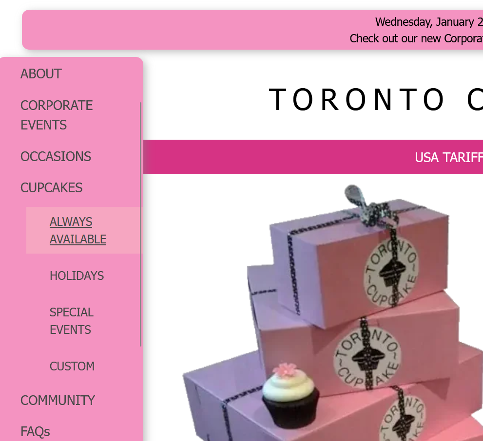
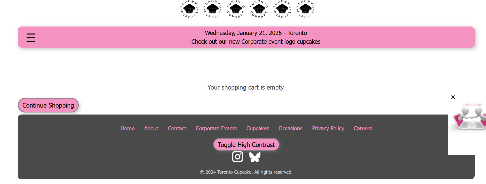
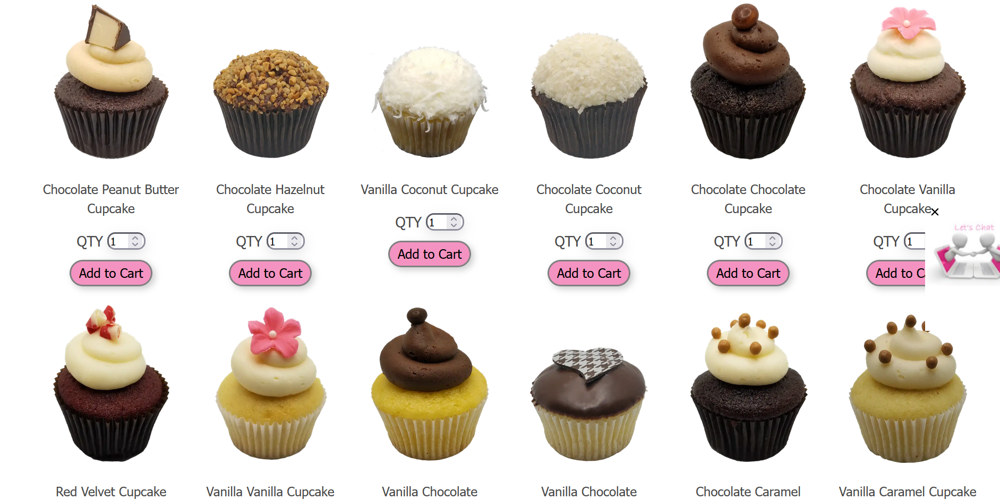
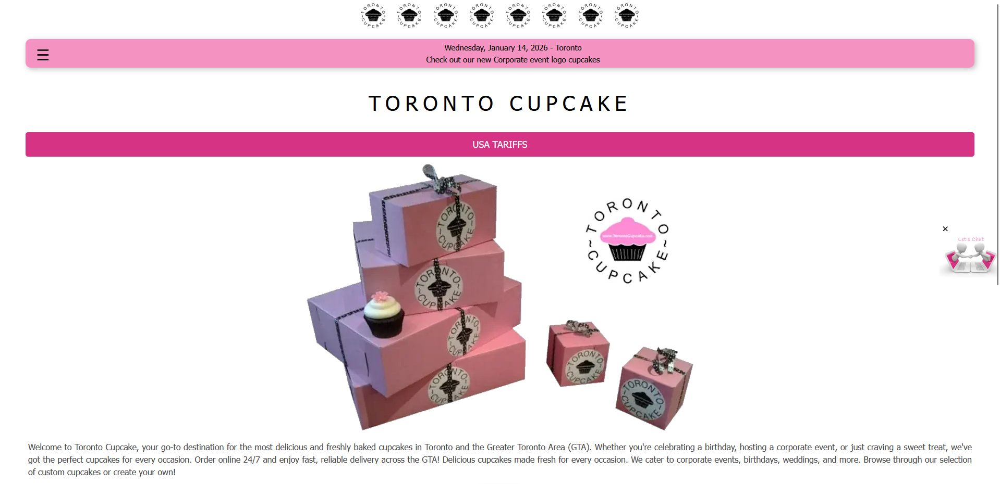
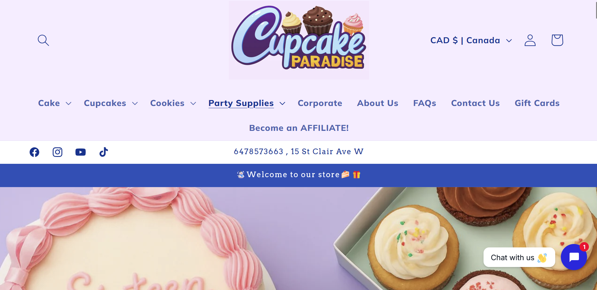
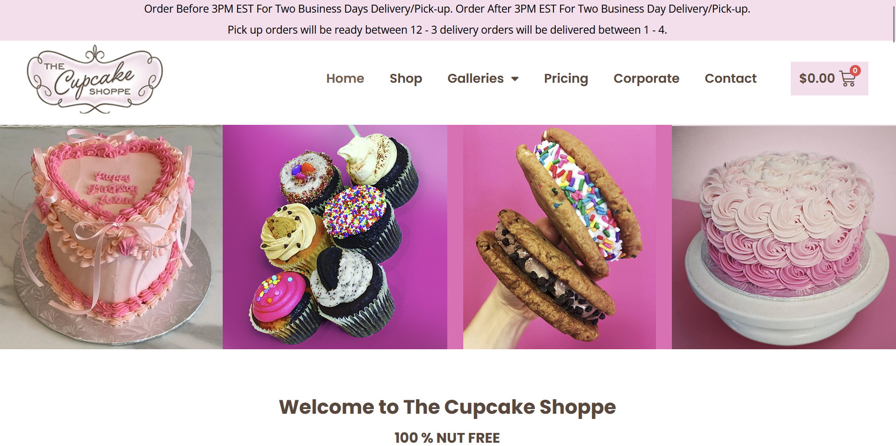

Project Proposal - Week Two
This week we discussed how to go about a UX/UI project, including the 5 step methodology and 7 usability factors. We also completed a design proposal and researched some market competitors for our chosen website.
Five Step Method
Chris outlined a five step method we can use to start a UI/UX project. This method is user focused, meaning that we design with the user's experience at the forefront of our minds.
1. Empathize
Think of issues that the user might encounter while using your product. Put yourself in their shoes. How well does the product help a user in accomplishing their goals?
2. Define
Take those problems and make them more concrete. What is the exact problem the user is facing? What is causing those problems? What are the factors involved?
3. Ideate
Start thinking of solutions. How can we help the user accomplish their goals in the fastest and most effective way possible?
4. Prototype
Take the best solutions and start to implement them. How will they fit into the current design? How will it affect the current user experience?
5. Test
Test your prototype on a small group of people. Get feedback on your design and find the holes in your solution. Fix new issues you encounter and refine your solutions to best meet the needs of your users.
Seven Usability Factors
The seven usability factors help us the possible barriers a user might encounter while using our application.
Useful
If the application is not useful, nobody wants to use it! A web app should solve a specific problem effectively for a user to find it useful.
For example, many people find Adobe products to be less useful now that they are stuffed with thousands of features. This makes the product do a lot of things, but not particularly good at any of them.
Usable
You can't use something that doesn't work.
A good example of this are Wikis. If a Wiki has no good page hierarchy, navigation systems, links, or references, it becomes a mess of articles nobody can read.
Findable
If a user can't find your product, none of these other factors will matter. Good SEO and use of semantic tags is vital for helping users find your product in the vast ocean of the web.
Credible
Anybody can create a site, so it's important that your site looks credible in order for users to trust it. Poor design can easily influence a user's decision to trust your site or not.
A good example of this is tabloid style news sites which cover their pages in outrageous titles, poor quality photos, ads, and lack authors with an education. Educated people will see these things and quickly decide that the site is not trustworthy.
Desirable
Aesthetics and trends play a large part in what products users decide to use. It's so powerful that sometimes a product doesn't need to be useful or useable for it to be desired.
There are millions of examples of this, but arguably the biggest ones are social media. It provides no real value to our lives and has been proven to do more bad than good, and yet FOMO is a driving factor of what keeps users on these apps.
Accessible
Users might not use your product simply because they can't. Any amount of disabilities, from vision, movement, or cognitive function might prevent a user from being able to use a product well.
A common web example is colour blindness. If your site lacks contrast or uses a palette that is not easily visible to everyone, those affected users simply will not use it.
Valuable
Lastly, your product must add value to the user in some way. Otherwise, what's stopping them from using another product or service?
An example of this is something like MapQuest. An outdated platform that is easily outdone by the default map app on your phone provides no value to a user.
Design Proposal
Now it was time to use these tools to define the issues with Toronto Cupcake and create a design proposal that outlined how we would fix them.
The Goal
Currently, Toronto Cupcakes is an outdated and frustrating website to use that lacks usability, desirability, and credibility.
The business claims to be a gourmet cupcakerie with a focus on community, so the goal of this redesign is to reflect that in the visual brand and functionality of the site.
Current Issues
Last week we mentioned a few obvious issues with the site. This week we defined those issues better.
Navigation
The main menu is hidden from users behind a hamburger menu and is vertical with dropdown options, which is very confusing and hard to look at. The hover states are unprofessional.

Shop/Catalogue
The cart is not easily accessible to users from all pages and is the design is dated.

The catalogue is very unappealing and hard to use. It is completely misaligned, lacking important information, and all around unprofessional.
Branding
The current design is old and boring. It does not cater to their audience or reflect what they want to be, which is gourmet. The logo is unprofessional and sloppy and the colour palette is childish.
Website Design
The website does not adhere to accessability standards, especially contrast. It has poor hierarchy, and typography which make it hard for all users to access.

Changes to Make
We will rebrand Toronto Cupcake to better reflect an elegant, gourmet cupcakerie with a focus on community.
The website design will be professional and polished with tasteful animations and hover states, correct alignment, padding, margin, professional icons and photos, and proper hierarchy.
The navigation will be follow web standards and be accessible at all times. Menu options will be reduced and made more clear.
The header and footer will be modernized with unnecessary information such has the date removed.
The shop, delivery, and cart functions will all be made easier to find/use.
The catalogue will be made much more appealing and understandable with uniform spacing, proper images, and with the pricing information easily seen.
Redundant pages and information will be removed, such as repeated questions on the FAQ page, the delivery page, and the resources and occasions pages combined for simplicity.
Market Competitors
We chose two market competitors to research. This helps us see what business in Toronto Cupcake's niche are doing well and what we can learn from that.
Cupcake Paradise
Cupcake Paradise is a bakery with catering services and a focus on allergen free and custom products.

Their website design, while looking very AI generated, is trendy, modern, and functional. The animations are tasteful and the colour palette suits their playful brand.
However, the AI generated images and logo could make it appear unprofessional to some users, and a lack of focus on community detracts from its desirability and value. The UI is slightly crowded and the constant animations make it a little annoying.
The Cupcake Shoppe
The Cupcake Shoppe Is a nut free bakery located in Toronto. Their selection is quite large and they also provide catering services.

This website is a little more dated and less trendy than Cupcake Paradise's, but their branding is very elegant and professional. Their UI is very clean and as a result, makes their website look credible.
Some issues with it are the photos being pixelated and lack of community makes a customer less likely to choose them over any other bakery.